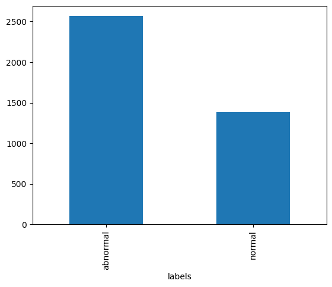

%%capture
import warnings
warnings.filterwarnings("ignore")
# Download the data
!curl -s https://openi.nlm.nih.gov/imgs/collections/NLMCXR_reports.tgz | tar xvzRSNA 2022: Deep Learning Lab
NLP: Text Classification with Transformers
In this demonstration, we will utilize techniques of natural language processing (NLP) to train a classifier, which will analyze the text of radiology reports for chest radiographs to predict whether a report is normal or abnormal.
Code
We will utilize four libraries from HuggingFace: Transformers, Accelerate, Datasets, and Evaluate. These libraries are written primarily in the Python programming language and can be used with both the PyTorch and TensorFlow deep learning libraries.
The demonstration in this notebook relies heavily on examples from the HuggingFace Course.
Data
The data is obtained from the National Library of Medicine’s Open-i service. We utilize the radiology reports from the Indiana University Chest X-ray Dataset for this demonstration.
Reference: Demner-Fushman D, Kohli MD, Rosenman MB, Shooshan SE, Rodriguez L, Antani S, Thoma GR, McDonald CJ. Preparing a collection of radiology examinations for distribution and retrieval. J Am Med Inform Assoc. 2016 Mar;23(2):304-10. doi: 10.1093/jamia/ocv080. Epub 2015 Jul 1.
Developer
- Walter F. Wiggins, MD, PhD - Duke University Hospital, Durham, NC, USA
Acknowledgements
- Felipe Kitamura, MD - UNIFESP, Sao Paulo, Brasil
- Igor Santos, MD - UNIFESP, Sao Paulo, Brasil
- Luciano M. Prevedello, MD, MPH - Ohio State University, Columbus, OH, USA
Interactive Participation
This notebook is designed for interactive participation.
If you are following along on your own computer, please download the notebook file from the link below.
You'll want to download this notebook to the same folder where your `uv` project lives.Please refer to the previous posts on installing Python and installing PyTorch and fast.ai with uv to ensure your environment is set up properly. You’ll also need to run the following commands to add four additional packages to your uv project.
uv add "transformers>=4.57.6"
uv add "accelerate>=1.12.0"
uv add "datasets>=4.5.0"
uv add "evaluate>=0.4.6"If you haven’t yet done the previous interactive tutorial on RNNs, you’ll also need to run the following command; however, it is highly recommended to do that one first, as some key concepts in NLP are covered within that will help you understand this tutorial.
uv add xmltodictTo run Jupyter Lab and open the notebook within your uv project, run the following command in your terminal.
uv run --with jupyter jupyter labYou can run the code cells in order, and modify parameters as desired to see how they affect the results.
If you are using Google Colab, please use the link below to open a compatible version in Colab. You can save a copy of the notebook to your own Google Drive by selecting “File” -> “Save a copy in Drive”.
Downloading the Data
When you run the following cell, the NLM Open-i “Indiana University Chest X-ray Reports” dataset will be downloaded.
Reformatting the Data
Each of the reports is stored in extensible markup language (XML) format. In order to work with the report text data more easily, we will extract the data and put it into a pandas.DataFrame, which is a tabular data structure.
The XML metadata contains MeSH terms for each report. We will use these to create the label for each report in our dataset. These labels will serve as the targets for training our classifier to predict whether the report is normal or abnormal.
After the relevant data is extracted from the XML files, the total number of reports and the first 5 rows of our data table will show up below.
import glob
import xmltodict
import pandas as pd
from fastcore.foundation import L
# suppress warnings from the output
import warnings
warnings.filterwarnings('ignore')
def xml_parse(f):
with open(f) as xml:
report_dict = xmltodict.parse(xml.read())
xml.close()
return report_dict
def get_label(report):
label = L(report['eCitation']['MeSH']['major'])
return 'normal' if label[0].lower() == 'normal' else 'abnormal'
def get_text(report):
text_dict = {}
text_dict['report_id'] = report['eCitation']['IUXRId']['@id']
text = report['eCitation']['MedlineCitation']['Article']['Abstract']['AbstractText']
findings = text[2]['#text'] if '#text' in text[2] else ''
text_dict['findings'] = findings
impression = text[3]['#text'] if '#text' in text[3] else ''
text_dict['impression'] = impression
text_dict['full-text'] = ' '.join([findings, impression])
return text_dict
def process_report(report):
label = get_label(report)
report_dict = get_text(report)
report_dict['labels'] = label
return report_dict
fps = L(glob.glob('./ecgen-radiology/*'))
reports = fps.map(xml_parse)
reports_df = pd.DataFrame(reports.map(process_report)).set_index('report_id').sort_index()
print('# of reports:', reports_df.shape[0])
print()
reports_df.head()# of reports: 3955
| findings | impression | full-text | labels | |
|---|---|---|---|---|
| report_id | ||||
| 1 | The cardiac silhouette and mediastinum size ar... | Normal chest x-XXXX. | The cardiac silhouette and mediastinum size ar... | normal |
| 10 | The cardiomediastinal silhouette is within nor... | No acute cardiopulmonary process. | The cardiomediastinal silhouette is within nor... | abnormal |
| 100 | Both lungs are clear and expanded. Heart and m... | No active disease. | Both lungs are clear and expanded. Heart and m... | normal |
| 1000 | There is XXXX increased opacity within the rig... | 1. Increased opacity in the right upper lobe w... | There is XXXX increased opacity within the rig... | abnormal |
| 1001 | Interstitial markings are diffusely prominent ... | Diffuse fibrosis. No visible focal acute disease. | Interstitial markings are diffusely prominent ... | abnormal |
Exploring the data
Let’s look through a little more of the data to get a feel for what we’re working with and how we might want to design the subsequent model training experiments.
We’ll then take a look at how many normals and abnormals we have to work with.
# Run this cell several times to view random samples of the data
reports_df.sample(5)| findings | impression | full-text | labels | |
|---|---|---|---|---|
| report_id | ||||
| 3155 | Heart size mildly enlarged with enlarged right... | Cardiomegaly, no acute pulmonary findings | Heart size mildly enlarged with enlarged right... | abnormal |
| 432 | The cardiomediastinal silhouette is within nor... | No acute cardiopulmonary process. | The cardiomediastinal silhouette is within nor... | normal |
| 433 | Heart size normal. Lungs clear. | Heart size normal. Lungs clear. | normal | |
| 2464 | The lungs appear clear. There are no suspiciou... | No acute cardiopulmonary disease | The lungs appear clear. There are no suspiciou... | normal |
| 1850 | The lungs are clear bilaterally. Specifically,... | No acute cardiopulmonary abnormality.. | The lungs are clear bilaterally. Specifically,... | normal |
Here are some of the things you may have noticed about the data, as you reviewed it: - Some reports only have an Impression (i.e. no separate Findings section) - Many reports contain blocks of “XXXX” text. This is due to the fact that these reports were anonymized prior to releasing them as an open data set. These blocks likely represent named entities or dates. - As expected, there is wide variation in the length of these chest radiograph reports.
Importantly, there are some reports where the “Impression” states something along the lines of “No acute cardiopulmonary abnormality” but the label is “abnormal”. It seems like this is usually due to a chronic incidental finding or artifact that is mentioned in the “Findings”, but isn’t included in the “Impression”.
We’ll revisit this point later when we’re deciding which text from the report we want to use to train our classifier.
Next, let’s count how many of each label we have.
label_counts = reports_df.labels.value_counts()
print('Abnormal:', label_counts['abnormal'])
print('Normal:', label_counts['normal'])
print()
label_counts.plot.bar();Abnormal: 2564
Normal: 1391

As we see in the bar graph above, there are almost twice as many abnormal reports as there are normal reports. This will be important to remember as we partition our data into training, validation, and test sets.
Language Modeling
The types of algorithms we use in NLP work with with numbers, not text. Therefore, we need a way to convert text into numbers. We also want a way for those numbers to contain a little more information about the text they represent. Here, we’ll describe the steps in preparing our text for language modeling.
Tokenization
Tokenization is the process by which we split text into chunks or tokens. An individual token could be a sentence or phrase, a word, a part of a word, or a single character. Most often, we choose to tokenize at the word or sub-word level.
Each token is assigned a sequential integer value and the collection of token-integer pairs is called our vocabulary.
DistilBERT Tokenization
In this case, since we’re training a transformer model, we will use a different tokenizer designed specifically for this task from the HuggingFace Transformers library.
from transformers import DistilBertTokenizerFast
text = reports_df.sample()['full-text'].values[0]
print(text)
tokenizer = DistilBertTokenizerFast.from_pretrained('distilbert-base-uncased')
print("Tokenizer vocab size:", len(tokenizer))
ids = tokenizer.encode(text, padding=True, truncation=True, return_tensors='pt')
print(ids[0])
print(tokenizer.decode(ids[0]))There are low lung volumes. There is bronchovascular crowding. Heart and mediastinal contours within normal limits. No focal infiltrate or effusion. No pneumothorax. Visualized osseous structures intact. No acute abnormality. Low volumes XXXX XXXX for the opportunity to assist in the care of your patient. If there are any questions about this examination please XXXX. XXXX XXXX, XXXX certified radiologist, at XXXX. .
Tokenizer vocab size: 30522
tensor([ 101, 2045, 2024, 2659, 11192, 6702, 1012, 2045, 2003, 22953,
12680, 7103, 28817, 8017, 4306, 2075, 1012, 2540, 1998, 2865,
16643, 12032, 9530, 21163, 2015, 2306, 3671, 6537, 1012, 2053,
15918, 29543, 2030, 1041, 4246, 14499, 1012, 2053, 1052, 2638,
2819, 29288, 2527, 2595, 1012, 5107, 3550, 9808, 3366, 3560,
5090, 10109, 1012, 2053, 11325, 19470, 3012, 1012, 2659, 6702,
22038, 20348, 22038, 20348, 2005, 1996, 4495, 2000, 6509, 1999,
1996, 2729, 1997, 2115, 5776, 1012, 2065, 2045, 2024, 2151,
3980, 2055, 2023, 7749, 3531, 22038, 20348, 1012, 22038, 20348,
22038, 20348, 1010, 22038, 20348, 7378, 2557, 10727, 1010, 2012,
22038, 20348, 1012, 1012, 102])
[CLS] there are low lung volumes. there is bronchovascular crowding. heart and mediastinal contours within normal limits. no focal infiltrate or effusion. no pneumothorax. visualized osseous structures intact. no acute abnormality. low volumes xxxx xxxx for the opportunity to assist in the care of your patient. if there are any questions about this examination please xxxx. xxxx xxxx, xxxx certified radiologist, at xxxx.. [SEP]Embedding
While these integers map one-to-one onto our tokens, their numeric value is otherwise meaningless. To embed more information into the numeric representation of our tokens, we employ a process called language modeling. We can either use a pre-trained language model for this embedding or we can fine-tune a language model to better model our “radiology language”. This latter process is called transfer learning.
Report Classifier Training
In the steps that follow, we will fine-tune a pretrained model as a text classifier, using the embeddings from the model’s pretraining. We will then test the classifier on our held-out test set to see how it performs on data it hasn’t seen yet.
This is different that how we did this in the RNNs tutorial, where we first fine-tuned a language model on the task of next token prediction to optimize embeddings, and then went on to train the classifier using those fine-tuned embeddings.
We skip that step to showcase the power and flexibility of Transformer models. We don’t even have to fine-tune the underlying language model to get a very accurate classifier.
# We'll use the Hugging Face datasets library to create our datasets
from datasets import Dataset
dset = Dataset.from_pandas(reports_df)
dsetDataset({
features: ['findings', 'impression', 'full-text', 'labels', 'report_id'],
num_rows: 3955
})Here we perform our train-validation-test splits with a built-in method similar to the scikit-learn function
dsets = dset.train_test_split(test_size=0.15, seed=42)
dsets_clean = dsets["train"].train_test_split(test_size=0.30, seed=42)
dsets_clean["validation"] = dsets_clean.pop("test")
dsets_clean["test"] = dsets["test"]
dsets_cleanDatasetDict({
train: Dataset({
features: ['findings', 'impression', 'full-text', 'labels', 'report_id'],
num_rows: 2352
})
validation: Dataset({
features: ['findings', 'impression', 'full-text', 'labels', 'report_id'],
num_rows: 1009
})
test: Dataset({
features: ['findings', 'impression', 'full-text', 'labels', 'report_id'],
num_rows: 594
})
})Next, we take our categorical labels and wrap them in a class that easily converts back and forth between numerical representation and text
from datasets import ClassLabel
label_names = ['normal', 'abnormal']
labels = ClassLabel(names=label_names)
labelsClassLabel(names=['normal', 'abnormal'])Here we define a function to tokenize our dataset in batches.
To see how the model performs with different inputs from the report try replacing `'full-text'` with `'findings'` or `'impression'`.def preprocess(batch):
tokens = tokenizer(batch['full-text'], truncation=True, max_length=128) # try 'full-text', 'impression', or 'findings' here
tokens['labels'] = labels.str2int(batch['labels'])
return tokenstokenized_dsets = dsets_clean.map(preprocess, batched=True)
tokenized_dsetsMap: 100%|██████████| 2352/2352 [00:00<00:00, 19274.10 examples/s]
Map: 100%|██████████| 1009/1009 [00:00<00:00, 24387.32 examples/s]
Map: 100%|██████████| 594/594 [00:00<00:00, 24232.27 examples/s]DatasetDict({
train: Dataset({
features: ['findings', 'impression', 'full-text', 'labels', 'report_id', 'input_ids', 'attention_mask'],
num_rows: 2352
})
validation: Dataset({
features: ['findings', 'impression', 'full-text', 'labels', 'report_id', 'input_ids', 'attention_mask'],
num_rows: 1009
})
test: Dataset({
features: ['findings', 'impression', 'full-text', 'labels', 'report_id', 'input_ids', 'attention_mask'],
num_rows: 594
})
})Setting up the Training Run
- We define a metrics function to output accuracy and F1-score during training and validation.
- We then configure our training experiment with a variety of hyperparameters. For more information on the different arguments, please see the docs for
TrainingArguments.
Try editing the hyperparameters with different options for arguments like `num_train_epochs` and `learning_rate` to see the effect these have on training.
For example, if you set `learning_rate` too low or too high, the model may fail to learn.
If it looks like your model is overfitting (i.e. validation loss goes up and validation metrics stop improving), then you might try reducing `num_train_epochs`.import numpy as np
from transformers import DistilBertForSequenceClassification, Trainer, TrainingArguments
from evaluate import load
# This metrics function will output accuracy and F1-score during training & validation
metric = load("glue", "mrpc")
def compute_metrics(eval_pred):
logits = getattr(eval_pred, "predictions", eval_pred[0])
labels = getattr(eval_pred, "label_ids", eval_pred[1])
preds = np.argmax(logits, axis=-1)
return metric.compute(predictions=preds, references=labels)
# This step configures our training experiment
training_args = TrainingArguments(
output_dir='./results', # output directory
num_train_epochs=5, # total number of training epochs
per_device_train_batch_size=16, # batch size per device during training
per_device_eval_batch_size=64, # batch size for evaluation
weight_decay=0.01, # strength of weight decay
logging_dir='./logs', # directory for storing logs
logging_strategy="steps",
logging_steps=10,
logging_first_step=True,
disable_tqdm=False,
eval_strategy='epoch',
do_train=True,
do_eval=True,
learning_rate=2e-5,
warmup_ratio=0.06,
logging_nan_inf_filter=False,
)Running the Training Experiment
Now we select our model and run the training experiment. You’ll see a warning printed out telling you that you should “probably TRAIN this model on a down-stream task to be able to use it for predictions and inference”. And that is exactly what we’re doing, so we can safely disregard.
model = DistilBertForSequenceClassification.from_pretrained("distilbert-base-uncased")
trainer = Trainer(
model=model,
args=training_args,
train_dataset=tokenized_dsets['train'],
eval_dataset=tokenized_dsets['validation'],
tokenizer=tokenizer,
compute_metrics=compute_metrics,
)
train_output = trainer.train()Some weights of DistilBertForSequenceClassification were not initialized from the model checkpoint at distilbert-base-uncased and are newly initialized: ['classifier.bias', 'classifier.weight', 'pre_classifier.bias', 'pre_classifier.weight']
You should probably TRAIN this model on a down-stream task to be able to use it for predictions and inference.
[735/735 06:57, Epoch 5/5]
| Epoch | Training Loss | Validation Loss | Accuracy | F1 |
|---|---|---|---|---|
| 1 | 0.204000 | 0.166343 | 0.955401 | 0.966493 |
| 2 | 0.184100 | 0.134775 | 0.964321 | 0.973373 |
| 3 | 0.125300 | 0.142841 | 0.966303 | 0.974889 |
| 4 | 0.087000 | 0.151876 | 0.967294 | 0.975646 |
| 5 | 0.006200 | 0.154686 | 0.967294 | 0.975646 |
# Finally we save our trained model for later use
trainer.save_model('fine-tuned')Testing the model
Now that our model is trained, let’s test it on our held-out test dataset.
test_output = trainer.predict(tokenized_dsets['test'])
print(test_output.metrics){'test_loss': 0.18446457386016846, 'test_accuracy': 0.9579124579124579, 'test_f1': 0.9654218533886584, 'test_runtime': 2.1735, 'test_samples_per_second': 273.288, 'test_steps_per_second': 4.601}Creating a Pipeline for Inference
from transformers import pipeline
classifier = pipeline("text-classification", model="fine-tuned")
classifier.model.config.id2label = {0: 'normal', 1: 'abnormal'}Device set to use mps:0test = tokenized_dsets['test']
print("Ground Truth Label:", labels.int2str(test[0]['labels']))
print()
print("Report text:", test[0]['full-text'])Ground Truth Label: abnormal
Report text: Heart size within normal limits. No focal airspace opacities. No pneumothorax. No effusions. Mild degenerative changes of the thoracic spine. No XXXX deformities. Emphysematous changes. Chronic lung disease, with no acute cardiopulmonary findings.classifier(test[0]['full-text'])[{'label': 'abnormal', 'score': 0.9945248365402222}]# Modify this cell with some sample text of your choosing to test out the model
sample_text = "Normal heart size and mediastinal contours. The lungs are well-aerated. No pleural effusion or pneumothorax. No displaced rib fractures."
classifier(sample_text)[{'label': 'normal', 'score': 0.9968691468238831}]